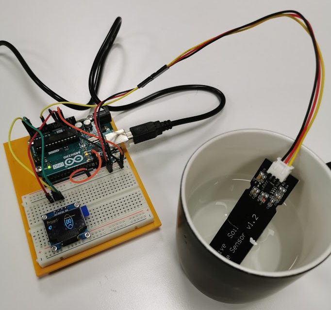
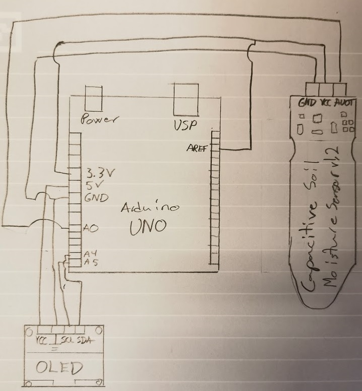

Til dette prosjektet trenger du:
Jeg kjøpte feil OLED display, da de 7 øverste pikslene på displayet har gul farge mens resten er blå.
"It's not a bug, it's a feature", så det ble til en kaps på smiley'en min
Testing

Det er enklest å teste koden ved å ta fuktighetssensoren i en kopp med vann. For å beskytte kretsen på sensoren,
har jeg påført et par lag med neglelakk. Det fungerer siden de komponentene ikke blir varm, og siden neglelakken jeg brukte ikke er strømledende.
Smileys

De 4 forskjellige smilefjesene som vises alt etter hvor fuktig jorda er. X vises prosentverdien av fuktigheten, hvor 0 er fuktigheten i normal luft,
mens 100% er når måleren er senket ned i vann.
Kretsen

OLED displayet får 5V og GND fra Arduino UNO, videre er SCl koblet til A5, mens SDA er koblet til A4.
Fuktighetssensoren får 3.3V og GND fra Arduino'en og AUOT er koblet til A0 (Analog input).
AREF har jeg koblet mot 3.3V, men jeg trur ikke det trengs.
Kode
Arduino koden. Overgangs verdiene blir finjustert etter hvert.
Videre plan
Plan er å senere overføre prosjektet til en ESP32 og koble den til en vannpumpe, når jeg får deler til det. Slik prosjektet er nå, får jeg testet fuktighetssensoren
til jeg velget å utvide prosjektet.